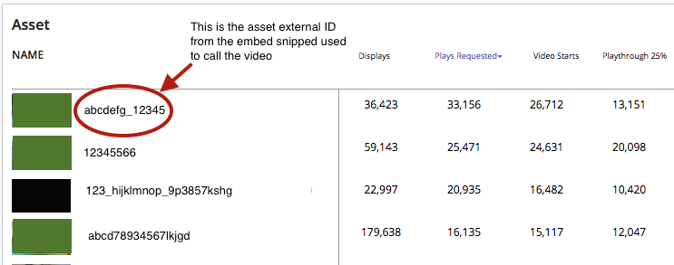

Notable changes for this release include new third-party player reporting
functionality in Ooyala IQ and a new Community login process.
Software Feature Releases
New Third-Party Player Reporting Feature in Ooyala IQ
You can now integrate Ooyala analytics (Ooyala
IQ) with any third-party system (non-Ooyala video players).
UI Adjustments
The
Ooyala IQ UI has been adjusted to
accommodate third-party player analytics. The adjustments include the following:
- The Player panel shows the third-party player name
when events come from a third-party player. For example, if you analyze
events coming from JW player, you will see "JW Player" in the Player panel.
- If content metadata is not ingested into Backlot, Ooyala IQ provides
graceful UI degradation. This means that Ooyala IQ can provide analytics for
third-party player events without requiring metadata ingestion from a
third-party CMS system. For example, if Ooyala IQ doesn't get a video
asset's title metadata, it will use the video asset's external ID in place
of the title (see image below for an example).

- If you are using Ooyala players and third-party players to
play Ooyala video assets (hosted in Backlot), you can now use one Backlot
account to stream video to an Ooyala player and a third-party player. You
can view consolidated IQ analytics metrics in one dashboard (through one
user account) for both types of players.You
can see the different metrics for your Ooyala players and third-party
players by looking at the Player and Device panels. Please note that for
third-party assets (hosted in a third-party CMS), you will still need to set
up a separate Backlot provider account to ingest asset metadata.
Metadata Synch
You can synch your third-party metadata with Backlot and Ooyala IQ via the
Backlot API. See Syncing Third-Party Metadata with Ooyala IQ for details.
Backlot Account Management
You will have a unique Backlot account for your third-party player analytics
accounts. We have made several modifications to make the Backlot UI more user
friendly for customers who use Ooyala IQ in a standalone fashion, including:
- In the MANAGE tab, we have removed the Embed, Monetize, Publishing
rules, Custom Metadata, and Encodings sub-tabs.
- In the MANAGE tab Details sub-tab, we have removed the Closed Captions,
Published To, and Content Replacement sections.
- In the main Backlot panel, we have removed the Pause button and Size
columns.
- In the asset Status section, only Live and Recently created are
available.
- In the left panel under content types, only Remote Asset and YouTube
Video are available.
- In the ACCOUNT tab, the Account Settings and User Management sub-tabs
are available.
- In the ACCOUNT tab User Management sub-tab, the API Secret key is
available.
- In the ACCOUNT tab, Admin, Manager, Read-Only, and Analytics Only user
roles are supported.
New JavaScript SDK
We've created a JavaScript SDK that communicates your third-party player's events
to Ooyala IQ. To integrate with the JavaScript SDK, you need to use an adapter
that translates your player's events and APIs to correlate with the events
defined in the Ooyala JavaScript SDK.
You can use an Ooyala adapter or create your own adapter.
For details on integrating with existing adapters and creating your own adapters,
see Integrating Third-Party Players with IQ Using the JS SDK.
Getting Started
Community Update
In an effort to make the Ooyala Community more open and accessible, we have
implemented a new login system utilizing the Lithium platform for sign-on. This
change will only be noticeable to existing Community members active before 12/2/15.
In the past, the Community sign-in was tied to your Backlot account. To access the
Community, members active before 12/2/15 will need to generate a new password. For
details on this process, see http://community.ooyala.com/t5/Ooyala-Blog/New-Community-quot-Sign-in-quot-coming-soon/ba-p/7821.